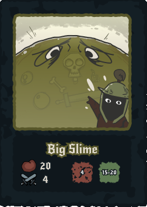
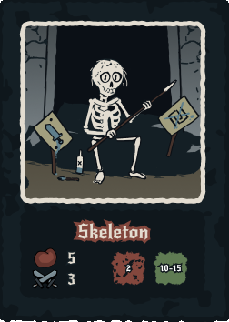
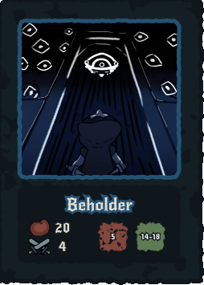
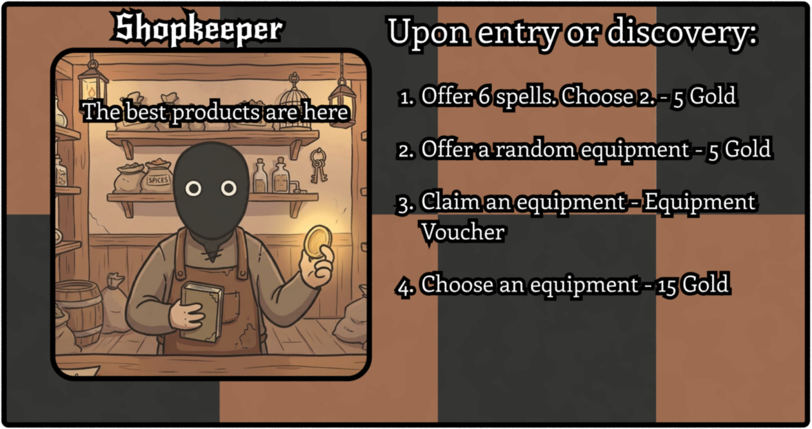

Cooperative Tension
Players share the same win and lose condition. The dungeon is designed to require teamwork — classes cover each other's weaknesses, and the Slime King fight is tuned to punish parties that didn't coordinate.
Class Identity
Each of the four classes plays differently by design. The Warrior tanks, the Healer sustains, the Witch deals spell damage, and the Paladin balances offence and defence. Your class should change how you approach every encounter.
Emergent Exploration
The dungeon is built from a shuffled tile deck drawn during play. No two runs produce the same layout — encounters, shops, and treasures appear in different orders, keeping each session fresh without requiring pre-designed levels.
Meaningful Progression
Gear upgrades, XP, and gold all serve a single purpose: making the party strong enough to survive The Slime King. Every session decision is framed against that goal — pacing the economy was one of the hardest design problems.
Tile-Based Exploration
Players draw and place tiles each turn — Monster, Treasure, Shop, Trap, or Blacksmith. The dungeon grows organically as players explore, with mandatory tile reveals keeping the threat alive.
Combat with Guard & Crit
Monsters have a Guard range (roll required to deal any damage) and a Crit range (roll required for 2× damage). This creates meaningful dice tension even in standard encounters — not just "roll high, win."
Shop & Blacksmith Economy
Gold funds spells from the Shopkeeper and equipment upgrades from the Blacksmith. Equipment degrades with use and must be repaired — creating a resource loop that persists across the whole session.
The Slime King
The final boss acts as the pacing forcing function — everything in the game is designed around whether the party is ready for it. It has unique abilities not present in regular encounters, rewarding players who spec intentionally.




.png)
Trials of the Dungeon is the only physical product in this portfolio — and that distinction matters. Designing for a tabletop means no engine to handle collision, no code to enforce rules, and no UI to communicate information. Everything has to work through the components themselves: the cards, the tiles, the tokens. The economy was built around two gold sinks — the Shopkeeper for consumables and the Blacksmith for upgrades — designed to create constant tension between saving and spending. Writing the rulebook was its own design challenge — clear rules that cover every edge case without being overwhelming is harder than it sounds. As lead designer on a group project, I also had to make decisions others would need to trust, communicate changes mid-production, and ensure the final product felt cohesive. It shipped as a complete, playable game.
Judge Feedback & Reflection
Trials of the Dungeon was presented to a panel of judges. Here's what they flagged, what they praised, and what I'd do differently.
What Worked
- Combat was praised for its simplicity — roll a dice, resolve the outcome. No overcomplicated systems blocking the fun. Judges noted this was the right call for a board game.
- Character progression was implemented and designed correctly — players felt meaningful growth across the session without it feeling arbitrary.
- The objective is clear and well-designed. Players always know what they're working toward: get strong enough to defeat The Slime King. No ambiguity in the win condition.
What Didn't / Would Change
- Both the tile deck and the monsters should have been seeded. In a fully shuffled deck, players could encounter a powerful monster extremely early with no way to beat it. Seeding both — controlling the order tiles appear and which monsters the player faces at what point — would have created a much more consistent and fair progression curve.
- The values for both spells and monster HP were too high. Numbers need more careful playtesting and iteration before they feel right. Balance was the weakest part of the design.
- Board game players want to do as little reading as possible. Spell instructions written in text were a friction point — custom icons to convey spell effects would have dramatically improved the play experience.
Key Takeaway
Physical game design punishes unbalanced numbers more than digital design does — there's no patch, no hotfix, no runtime adjustment. The balance issues and readability problems are things that only surface through playtesting with real people, and we didn't do enough of it before the final presentation. The lesson: playtesting isn't a final step — it's the design process itself. Every session with real players should be changing something.